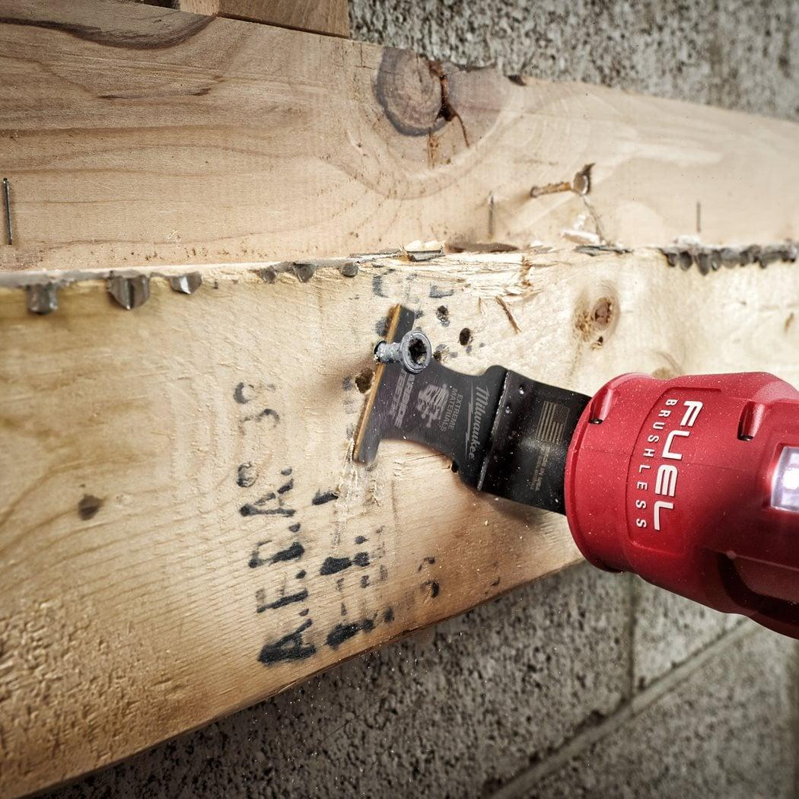
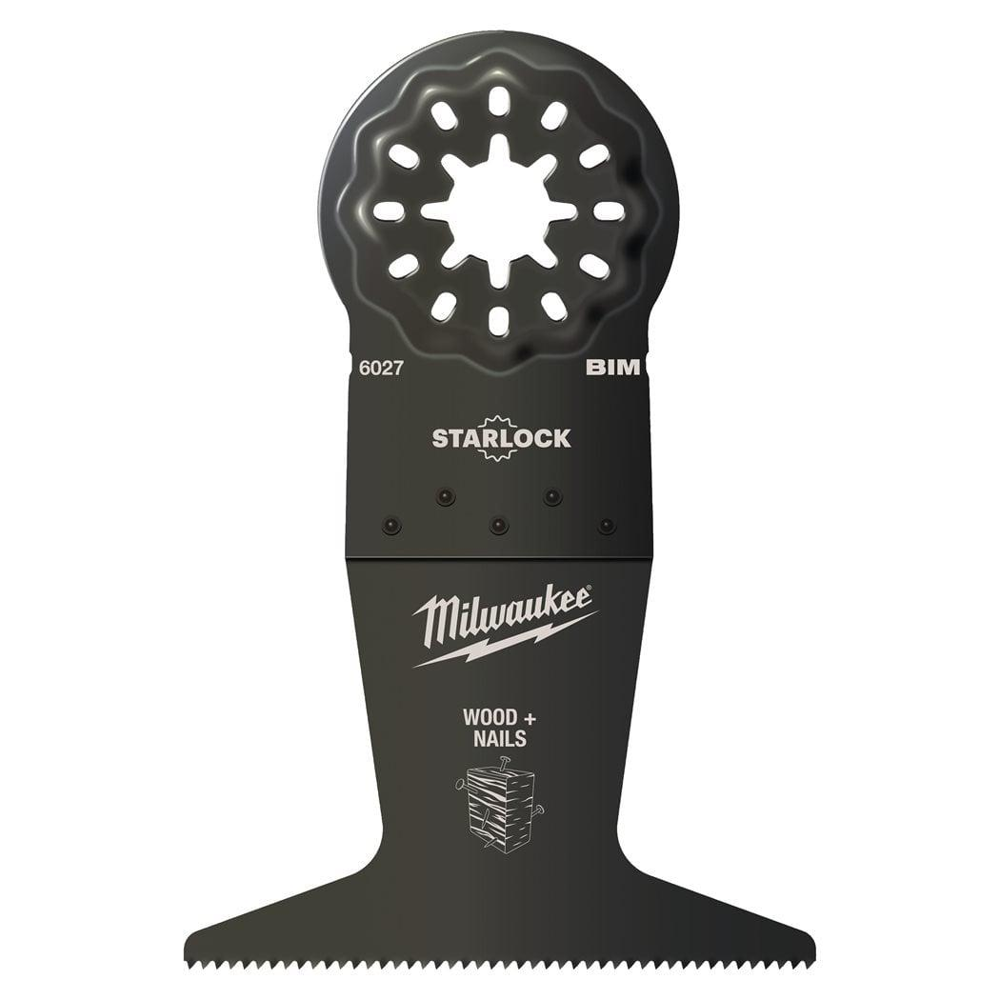

<h1>Milwaukee | Wood &amp; Nails Bi-Metal 65mm Plunge Blade - 1pc</h1><p>48906027</p><div style="display:flex;flex-wrap:wrap;gap:8px"></div><h4>Information</h4><table><tr><td>Length (mm)</td><td>42</td></tr><tr><td>Materials suited for</td><td>Wood|Wood with nails &amp; screws|Plastics|Metal Channel and Profiles</td></tr><tr><td>Pack quantity</td><td>1</td></tr><tr><td>Plastics</td><td>✔</td></tr><tr><td>Reception</td><td>Starlock</td></tr><tr><td>Soft wood</td><td>✔</td></tr><tr><td>Width (mm)</td><td>65</td></tr><tr><td>Wood with Nails</td><td>✔</td></tr></table>